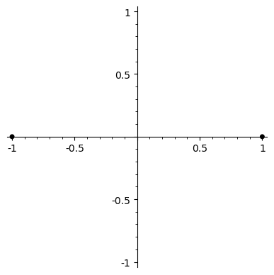

↰ up
Cyclotomic Automorphisms Z_2
Automorphism tree
On the left is a visualisation of an automorphism of a cyclotomic field K_n = Q(ζ_{2^n}), where ζ_{2^n} = exp(2πi/2^n). The label underneath gives the binary expansion of the number d such that the automorphism sends exp(2πi/2^n) to exp(2πid/2^n), read left to right (so 1011 = 1 + 4 + 8 = 13, etc). On the right are the two possible lifts of the automorphism in the field K_{n+1}. Clicking one of these moves up to the next layer of the tower, again showing the two lifts (currently up to 6 levels). Clicking on the automorphism itself moves back down through the tree.

1
|

10
|

11
|
|
Composing automorphisms
This section lets you view multiplication of automorphisms. All the Galois groups are abelian, so the order of multiplication doesn't matter. If automorphisms from two different levels are chosen, the higher level map is dropped down to the lower level and the multiplication is performed there.